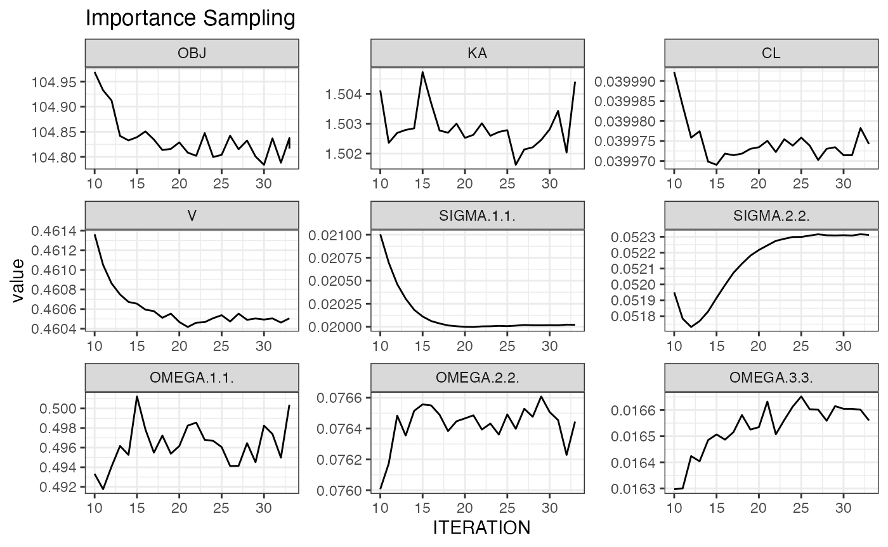
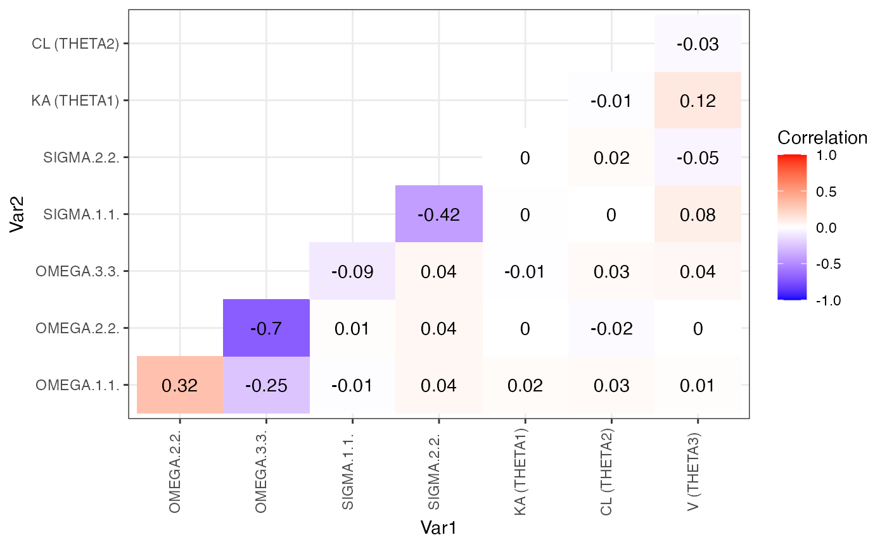

vignettes/articles/a8_post_processing.Rmd
a8_post_processing.RmdUse markdown templates to create a customised set of diagnostics to reuse on multiple models. In the demo an example is shown in Scripts/basic_gof.Rmd, but ideally you’ll create your own customised version with everything you need to evaluate your model. To create an R markdown diagnostic template go to FILE -> New File -> R markdown -> From Template then select from one of the following:
model diagnostic
VPC diagnostic
PPC diagnostic
bootstrap results
PLACEHOLDER: short YouTube video of opening, customising, saving and running a template.
A template will appear in the script window for you to customise. Instructions are the at the top. Save the file (e.g. as Scripts/basic_gof.Rmd) and run in your log script with:
It will create the output in Results (or results_dir(m1))
Apply a fully editable goodness of fit R markdown template to both runs m2 and m3:
Note: c(m1, m3) is a vector object of 2 NONMEM runs. We’ll touch more on this later.
Evaluate and compare runs on the fly with the following commands
rr(c(m2, m2WT))
#> parameter type unit trans Models/m2 Models/m2WT
#> 1 KA THETA h-1 LOG 1.5 (21.7%) 1.5 (21.6%)
#> 2 CL THETA h-1 LOG 0.04 (8.33%) 0.0398 (7.83%)
#> 3 V THETA L LOG 0.461 (4.65%) 0.459 (4.66%)
#> 11 TVCLWTlinear THETA <NA> <NA> -0.0115 (0.00874)
#> 4 IIV_KA OMEGAVAR CV% LOG 80.6 (21.2%) 80.5 (22.5%)
#> 5 IIV_CL OMEGAVAR CV% LOG 28.2 (27.9%) 26.1 (34.9%)
#> 6 IIV_V OMEGAVAR CV% LOG 12.9 (44.6%) 13 (44.5%)
#> 7 prop error SIGMA SD <NA> 0.141 (10.3%) 0.134 (12.1%)
#> 8 add error SIGMA SD <NA> 0.229 (20%) 0.264 (25.7%)
#> 9 OBJ OBJ <NA> 104.823 102.719
#> 10 CONDNUM CONDNUM <NA> 6.63 (0) 7.75 (0)
plot_iter(m2, skip = 10) ## skip first 10 interations 
covariance_plot(m2)
However these are better placed inside templates to enable rapid and consistent re-use.
Create simulation based diagnostics first by running a simulation using update_parameters() and convert_to_simulation(). Then use the ppc diagnostics and vpc diagnostics R markdown templates to generate customisable VPC and PPC diagnostics reports.
The package rsample can be used to create bootstrap datasets in your initial data manipulation scripts. The following is an example bootstrap dataset being prepared with stratification on SEX and bodyweight WTC categorised in two categories
d <- d %>%
mutate(WT_C = cut(WT, breaks = 2, labels = FALSE),
STRATA = paste(SEX, WT_C, sep = "_"))
d_id <- d %>% distinct(ID, STRATA)
set.seed(123)
## create large set of resamples (to enable simulation to grow without ruining seed)
bootsplits <- rsample::bootstraps(d_id, 100, strata = "STRATA")
dir.create("DerivedData", showWarnings = FALSE)
bootsplits %>% saveRDS("DerivedData/bootsplit_data.csv.RData")In a model development script, the following, performs a 100 sample bootstrap of model m1
m1_boot <- m1 %>% make_boot_datasets(samples = 100, overwrite = TRUE)
m1_boot$m %>% run_nm()
## the following bootstrap template will wait for results to complete
m1_boot$m %>% nm_list_render("Scripts/basic_boot.Rmd")Results can be viewed in Results/basic_boot.m1.html.